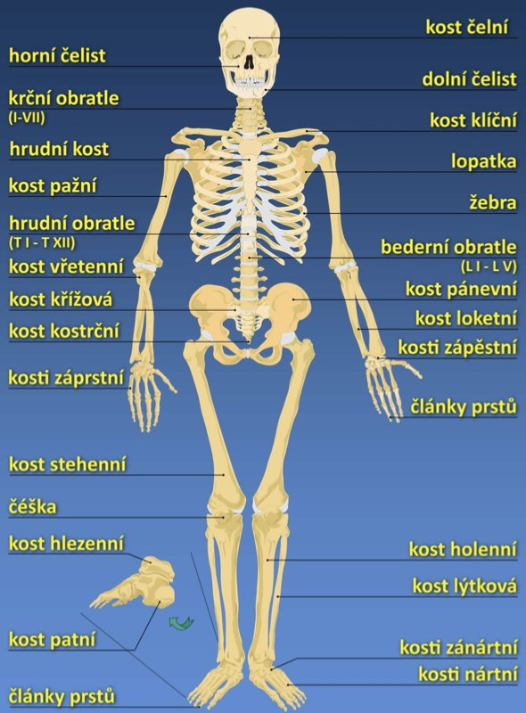

Biologie · příprava na test
Stavba lidského těla
13 témat z prezentace. Projdi každou soustavu, klikni „Umím to“, pak kartičky a nakonec test. Žluté = nejdůležitější, RU = nápověda v ruštině. Na obrázky klikni a zvětší se.
buňka→
tkáň→
orgán→
soustava→
organismus

Krok 2
Kartičky
Klikni na kartičku a otoč ji. Řekni odpověď nahlas dřív, než ji otočíš.
otázka
odpověď
Krok 3
Test
Piš odpovědi do okének nebo vyber možnost. Háčky a čárky psát nemusíš.
Správně: 0 / 0Série: 0